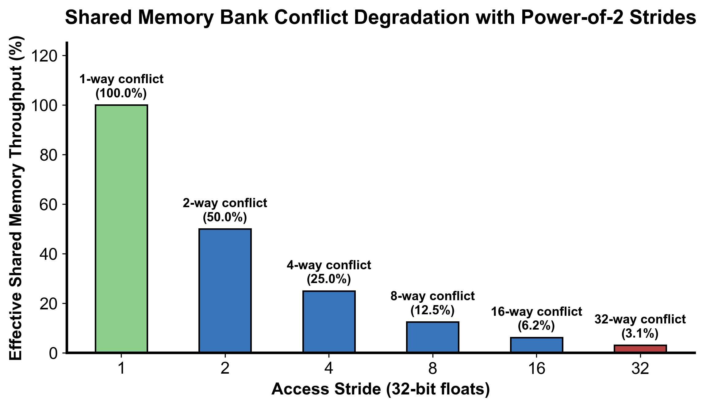

sequenceDiagram
autonumber
participant GM_In as 全局内存输入 A
participant SM as 共享内存 tile[32][33]
participant GM_Out as 全局内存输出 B
GM_In->>SM: 线程合并读取 A[y, x] 并写入本地 tile[ty][tx]
Note over SM: __syncthreads() 保证整个 Tile 填满
SM->>GM_Out: 线程按转置坐标合并读取 tile[tx][ty]，并合并写入 B[x, y]
Note over GM_In,GM_Out: 读写双向全部达成合并访存且 SMem 无 Bank 冲突
第 9 课：共享内存转置与 Bank Conflict
参考答案版：包含完整代码实现与问答题深度参考解析。建议先独立完成练习题后再展开核对。
本课目标与完成标准
学完后你应能：实现 32×32 tiled transpose，解释 +1 padding 消除 bank conflict。
通过必须同时满足：
- 独立补齐本课唯一的代码填空题，并通过给定检查；
- 三个问答题均说明因果链，而不是只报术语；
- 能指出至少一个正确性边界和一个性能取舍；
- 总分不低于 8/10，且没有一票否决级概念错误。
前置关系
- 课程前置：C/C++、线性代数、基本并行编程
- 本课在路线中的作用：共享内存 tile 把 global 的跨步写转换为 tile 内转置，再以连续地址写回。
核心心智模型
核心操作与执行流程图解

图 9-1：Shared Memory 跨步冲突对有效吞吐的影响及填充消除原理（基于 scientific-figure-making 绘制）
图 9-2：基于共享内存中继的双向合并转置执行流
1. 它是什么，解决什么问题
共享内存分块转置（Tiled Transpose with Shared Memory） 是解决显存读写不对称性、达成“读端与写端双向 100% 合并访存”的经典架构范式。
上一课暴露的物理困境： - 朴素转置在全局显存中直接跨步写入，导致显存总线事务被切碎为 32 个独立的散落写请求，写入带宽仅剩 12.5%； - 分块中继解决方案（图 9-2）：将输入矩阵切分为 \(32 \times 32\) 的数据瓦片（Tiles）。线程块先以连续地址将数据合并读入片上极高速的共享内存（Shared Memory，带宽达数十 TB/s）；在共享内存内部完成行列坐标调换；最后再次以连续地址将转置后的数据合并写回全局显存！ - 随之而来的新瓶颈：Bank Conflict（图 9-1）：共享内存被组织为 32 个交错的存储体（Banks）。当线程转置读取共享内存的一列数据时，各线程访问的地址刚好相差 32 个单字，导致 32 个线程同时争抢同一个 Bank（32 路 Bank Conflict），使原本单周期的片上访问被硬件强制串行化为 32 个连续周期！本课通过添加关键的 +1 填充（Padding） 彻底化解此冲突。
2. 它如何工作（结合图 9-1 与图 9-2）
算法采用由 256 个线程构成的 2D 线程块（dim3 block(32, 8)），每个线程通过 4 次循环循环搬运覆盖 \(32 \times 32\) 的 Tile： 1. 第一阶段：合并读取与写入共享内存 - 线程全局坐标为 \((x, y)\)。线程以循环跨步（j = 0, 8, 16, 24）读取 Global Memory 中的连续数据 input[row * N + col]（其中连续的 threadIdx.x 读取连续地址，100% 合并）； - 将读取到的数据存入共享内存缓冲：tile[threadIdx.y + j][threadIdx.x]。此处写入也是按行连续写入，完全没有 Bank Conflict。 2. 第二阶段：片上块同步栅障（__syncthreads()） - 调用 __syncthreads()，强制 Block 内全部 256 个线程全部完成 Tile 的写入，防止后续读操作读取到未初始化的陈旧脏数据。 3. 第三阶段：转置读取共享内存与合并写回 - 逻辑坐标对调：将原有的分块坐标 blockIdx.x 与 blockIdx.y 颠倒，映射到输出矩阵的目标分块位置； - 线程从共享内存中读取转置后的元素：tile[threadIdx.x][threadIdx.y + j]（注意行号由 threadIdx.x 决定）； - 若共享内存定义为 tile[32][33]，各线程访问的元素恰好分散在 32 个不同的 Bank 中，单周期并行读出； - 线程将数据以连续地址写入目标显存：output[row * M + col]。写端成功实现 100% 合并访存！
3. 正确性条件与常见误区
- 同步栅障的严格必要性（WAR 与 RAW 冒险）：
- 线程块内的 8 个 Warp 并非锁步执行。如果在写完 SMEM 和读出 SMEM 之间省略
__syncthreads()，执行速度较快的 Warp 会立刻执行读操作，而速度慢的 Warp 尚未完成全局显存加载，导致读出未初始化的垃圾数据；
- 线程块内的 8 个 Warp 并非锁步执行。如果在写完 SMEM 和读出 SMEM 之间省略
- 长宽与边界守卫的双向翻转：
- 第一阶段读取输入时，合法条件为
row < M && col < N； - 第二阶段写回输出时，矩阵行列颠倒，合法条件必须相应调整为
row < N && col < M； - 填充字段（Padding）仅用于改变共享内存在物理寻址上的步长，绝对不能改变任何业务边界逻辑。
- 第一阶段读取输入时，合法条件为
4. 性能与工程取舍
- Bank Conflict 的微观数学机理（图 9-1）：
- NVIDIA GPU 共享内存包含 32 个 Bank，每个 Bank 宽度为 4 字节（1 个 32-bit 字），采用循环交错映射：\(\text{Bank ID} = (\text{Word Address}) \pmod{32}\)；
- 若定义
tile[32][32]，同一列相邻行的元素相隔 32 个单字。当 Warp 内 32 个线程沿列读取tile[threadIdx.x][固定列]时，线程 \(k\) 访问的地址为 \(k \times 32\)，其 Bank 号为 \((k \times 32) \pmod{32} \equiv 0\)！全部 32 个线程挤在 Bank 0，吞吐跌至 \(\frac{1}{32}\)； - 若定义
tile[32][33]，行步长被人工扩充为 33 个单字。线程 \(k\) 访问的地址为 \(k \times 33\)，其 Bank 号为 \((32k + k) \pmod{32} = k \pmod{32} = k\)。32 个线程精准均匀命中 Bank 0 到 Bank 31，Bank Conflict 完全清零！
- Padding 内存开销 vs. Swizzling 地址变换：
+1Padding 仅多消耗 \(32 \times 1 \times 4\text{ B} = 128\text{ 字节}\) 共享内存，代价几乎为零，是经典工程首选；- 在 CUTLASS 等高度定制的现代算子库中，还可以使用 XOR Swizzling（异或地址混洗）：通过对逻辑地址的高位与低位进行异或映射消除冲突，连 128 字节的 Padding 空间都无需浪费。
具体演示：32 路 Bank Conflict 与 Padding 消除数学推演
考虑单个 Warp（32 个线程，Lane 0 ~ 31）并发读取一列数据（列号固定为 0）： - 无 Padding：float tile[32][32] - Lane 0 访问 tile[0][0] \(\to\) 单字偏移 \(0 \times 32 + 0 = 0\) \(\to\) Bank \(0 \pmod{32} = 0\)； - Lane 1 访问 tile[1][0] \(\to\) 单字偏移 \(1 \times 32 + 0 = 32\) \(\to\) Bank \(32 \pmod{32} = 0\)； - Lane 2 访问 tile[2][0] \(\to\) 单字偏移 \(2 \times 32 + 0 = 64\) \(\to\) Bank \(64 \pmod{32} = 0\)； - \(\dots\) - Lane 31 访问 tile[31][0] \(\to\) 单字偏移 \(31 \times 32 = 992\) \(\to\) Bank \(992 \pmod{32} = 0\)； - 结果：32 个线程的物理请求全部冲突在 Bank 0。硬件只能将该指令拆解为 32 个连续时钟周期的单访存事务，片上延迟拉长 32 倍。 - 添加 Padding：float tile[32][33] - Lane 0 访问 tile[0][0] \(\to\) 单字偏移 \(0 \times 33 + 0 = 0\) \(\to\) Bank \(0 \pmod{32} = 0\)； - Lane 1 访问 tile[1][0] \(\to\) 单字偏移 \(1 \times 33 + 0 = 33\) \(\to\) Bank \(33 \pmod{32} = 1\)； - Lane 2 访问 tile[2][0] \(\to\) 单字偏移 \(2 \times 33 + 0 = 66\) \(\to\) Bank \(66 \pmod{32} = 2\)； - \(\dots\) - Lane \(k\) 访问 tile[k][0] \(\to\) 单字偏移 \(k \times 33\) \(\to\) Bank \((32k + k) \pmod{32} = k\)； - 结果：Lane \(k\) 独占 Bank \(k\)。所有 32 个线程在 1 个时钟周期内全部无冲突完成加载！
实践任务：唯一代码填空题
补齐 shared-memory 第二维。
规则：只能修改 TODO/______ 所在位置；不要删除断言或放宽误差。代码注释说明了每个边界条件。
Code
%%writefile /tmp/09_transpose_tiled.cu
#include <cuda_runtime.h>
namespace {
constexpr int TILE_DIM = 32;
constexpr int BLOCK_ROWS = 8;
// Tiled Transpose:
// input: [M, N] row-major
// output: [N, M] row-major
//
// naive transpose 的问题：
// 读 input 是连续的，但写 output 会变成大步长 strided write，
// 一个 warp 写出去的地址不连续，global memory store 不合并。
//
// 优化思路：
// 1. 先把 input 的 32x32 tile 合并读取到 shared memory。
// 2. 再从 shared memory 转置后合并写到 output。
// 3. shared memory 第二维用 33，避免 tile[col][row] 访问时 32 路 bank conflict。
__global__ void transpose_tiled_kernel(
const float* __restrict__ input,
float* __restrict__ output,
int M,
int N
) {
__shared__ float tile[TILE_DIM][______]; // TODO: padding 后的 leading dimension
int x = blockIdx.x * TILE_DIM + threadIdx.x;
int y = blockIdx.y * TILE_DIM + threadIdx.y;
// 一个 block 只有 32x8=256 个线程。
// 每个线程用 j 循环搬 4 行，合起来覆盖 32x32 tile。
for (int j = 0; j < TILE_DIM; j += BLOCK_ROWS) {
int row = y + j;
int col = x;
if (row < M && col < N) {
tile[threadIdx.y + j][threadIdx.x] = input[row * N + col];
}
}
__syncthreads();
// 交换 blockIdx.x 和 blockIdx.y，实现 tile 级转置后的写回位置。
x = blockIdx.y * TILE_DIM + threadIdx.x;
y = blockIdx.x * TILE_DIM + threadIdx.y;
for (int j = 0; j < TILE_DIM; j += BLOCK_ROWS) {
int row = y + j;
int col = x;
if (row < N && col < M) {
output[row * M + col] = tile[threadIdx.x][threadIdx.y + j];
}
}
}
} // namespace
void launch_transpose_tiled(
const float* input,
float* output,
int M,
int N,
cudaStream_t stream
) {
dim3 block(TILE_DIM, BLOCK_ROWS);
dim3 grid((N + TILE_DIM - 1) / TILE_DIM, (M + TILE_DIM - 1) / TILE_DIM);
transpose_tiled_kernel<<<grid, block, 0, stream>>>(input, output, M, N);
}检查方法
有 CUDA 环境时执行 nvcc -std=c++17 -c /tmp/09_transpose_tiled.cu -o /tmp/09_transpose_tiled.cu.o；无 CUDA 环境时只做静态审查并登记待验证。
提交时请给出：补齐后的代码、实际运行输出（环境不可用时注明“仅静态审查”）以及对失败用例的解释。
Q1
不要背定义：请从输入、状态变化和输出三个阶段解释“共享内存转置与 bank conflict”的工作机制。
你的答案：
Q2
删除中间 __syncthreads() 为什么是数据竞争而不只是性能下降？
你的答案：
Q3
在 bank 宽度或元素类型变化后，+1 是否总是最优？
你的答案：
评分与通过规则
- 代码 4 分：正常输入 2 分，边界输入 1 分，解释实现 1 分；
- Q1～Q3 各 2 分；
- 一票否决：结果碰巧正确但核心因果链错误、删除边界检查、把未运行结果说成实测。
需要提示时按四级机制请求：概念区域 → 具体方向 → 关键局部 → 完整答案。